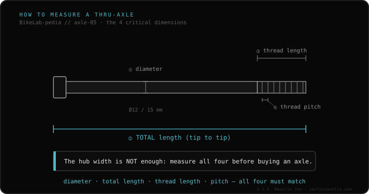

To buy a correct replacement thru-axle, the hub width (142, 148…) isn't enough: you must measure four dimensions. One, the diameter (12 or 15 mm). Two, the total length of the axle end to end (it depends on the frame dropout thickness, not just the width). Three, the thread length. Four, the thread pitch (M12×1.0, 1.5 or 1.75, by brand). With those four you nail the axle; with only the width, you'll almost certainly fail.
It's the costliest buying mistake of the cluster: ordering a «148» axle that won't fit by length or thread. Measure it this way and you won't miss.
With the wheel out and the axle in hand: measure the diameter of the smooth body (12 or 15 mm). Measure the total length end to end, including the head. Measure how long the threaded section is. And determine the pitch by counting 10 threads (10 mm = 1.0 pitch; 15 mm = 1.5; 17.5 mm = 1.75) or with a thread gauge. Note all four: those are what the shop needs to give you the right axle.

Two frames of the same width (148) can need axles of different total length (thicker or thinner dropouts) and different thread pitch by brand. If you go by «148» alone, the axle can end up short, long or with a thread that won't enter. The four dimensions remove the guesswork.
If you don't know which axle, width or thread your frame uses, send us the case. Real diagnosis, nothing to sell you. Message us on WhatsApp
Because two 148 mm frames can have dropouts of different thickness (different total axle length) and different thread pitch. Width is just one of four measurements.
Count 10 consecutive threads: 10 mm means 1.0; 15 mm, 1.5; 17.5 mm, 1.75. Or use a thread gauge.
Measure the dropout thickness and the width, and check the frame maker's spec: it usually lists the exact length and pitch.
© 2026 BikeLab Studio. Content under CC BY 4.0: you may copy, translate and publish it, even for commercial purposes. Citation is mandatory. Without attribution, the license terminates automatically (CC BY 4.0, §6.a) and the use becomes copyright infringement: we request the removal of the content and its deindexing. · Design and ownership: Carlos Ravello Joo